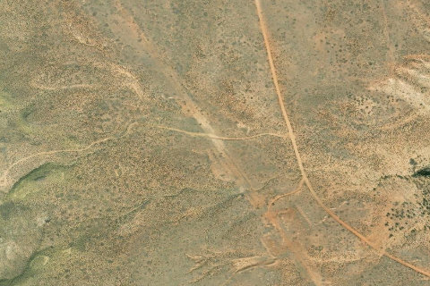

Big Thompson Mesa
BIGTHOMPSONMESA · UT

Aerial imagery source: Esri, Vantor, Earthstar Geographics, and the GIS User Community
| Identifier | BIGTHOMPSONMESA |
|---|---|
| State | UT |
| Runway length | 705 ft |
| Runway width | 30 ft |
| Surface | Dirt |
| Runway | 15/33 |
| Elevation | 5,002 ft |
| Ownership | blm |
| CTAF | 122.9 |
| Coordinates | 37.6888, -110.9138 |
Notes
[ubcp] Description : Once I read a comment about this being a good emergency landing spot. I would tend to agree as this once was a massive airstrip surrounded by flat mesa. In the distant past DC3’s where probably flown here to resupply smaller aircraft and trucks to support the mining operations. This airstrip is also as close to Capital Reef National Park as you can get. A short five minute walk and you will be overlooking the ridge formation to the west. Recently I took a very talkative family member here and he was left speechless for a least an hour. An amazing place you won’t forget. No cell coverage. Runway : A two-track road runs along the runway itself. The runway is split near the north end by the road headed to the overlook. Normally the runway is smooth enough for most aircraft types, however you may have to pick your line around some smaller shrubs that are scattered in the grassy areas especially towards the north. Since the recent designation of the airstrip in the Henry Mountains and Fremont Gorge TMP, the actual runway surface is the part of the north/south road that begins south of the southern connector from the Big Thompson Mesa road. Approach Considerations : Wide open approaches for landing north or south. It is advisable to alter patterns to avoid flight into Capital Reef National Park immediately to the west. Parking : Room for a full-size fly-in as there is no shortage of space. Same goes for camping, be aware that camping inside of the National Park requires a permit. The park boundary line is well marked on the road leading to the overlook.